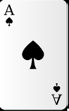
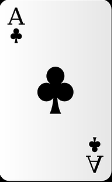
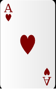

스마트폰은 컴퓨터를 결합한 무선 휴대전화기이다.PC에서 실행되는 운영체제보다 작게 만드는 모바일 운영체제를 탑재하여 인터넷 검색, 전자우편, 간단한 문서 편집, 카메라, 오디오 및 비디오 재생 등 PC의 기능을 거의 모두 갖추고 있다.
2003년 스마트폰[5]은 PC와 같은 기능과 더불어 고급 기능을 제공하는 휴대 전화이다. 응용 프로그램 개발자에게는 표준화된 인터페이스와 플랫폼을 제공하여 완전한 운영 체제 소프트웨어를 실행하는 전화일 것이고,다수의 일반인에게는 전자 우편·인터넷·전자책 읽기 기능
안드로이드(영어: Android)는 스마트폰, 태블릿 PC 같은 터치스크린 모바일 장치 용으로 디자인된 운영체제이자 수정된 리눅스 커널 버전을 비롯한 오픈 소스 소프트웨어에 기반을 둔 모바일 운영 체제다.
아이폰(영어: iPhone)은 미국의 기업 애플이 디자인하고 마케팅한 터치스크린 기반 휴대 전화 계열이다. 애플의 iOS 모바일 운영 체제를 사용한다. 1세대 아이폰은 애플의 공동 창립자 스티브 잡스가 2007년 1월 9일 발표하였고 제품은 2007년 6월 29일 출시되었다.
스마트폰


